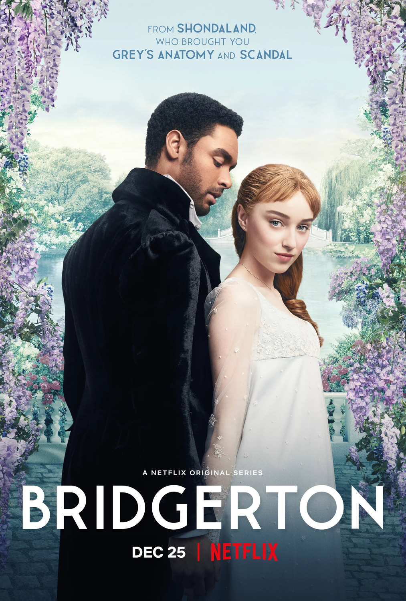
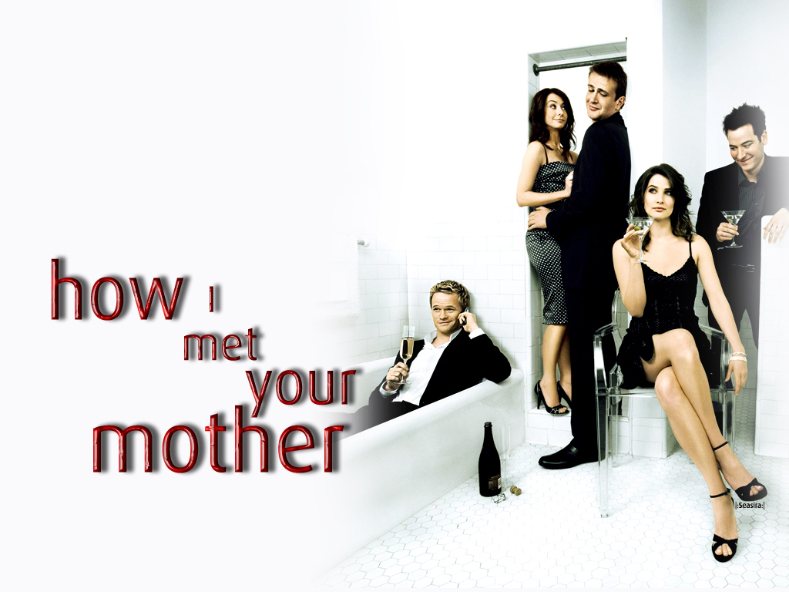
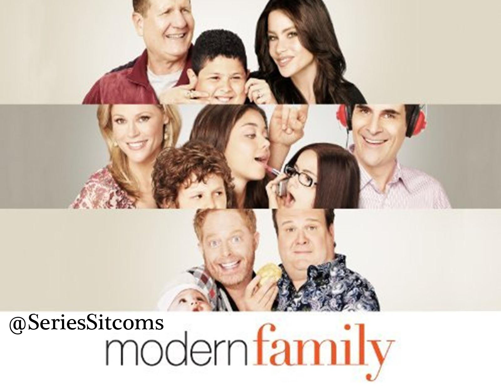
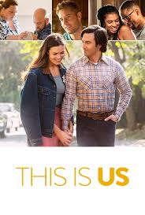

5: Bridgerton
Ratings : 🌟 7.3
Genre :DramaRomance
Seasons : 1
Episodes : 9
Air-Date : December 25, 2020
Watch-Time : 60 min.(Per Ep.)
Synopsis:
Bridgerton is an American streaming television period drama series created by Chris Van Dusen and produced by Shonda Rhimes. It is based on Julia Quinn's novels set in the competitive world of Regency era London's Ton during the season, when debutantes are presented at court. The drama centers on the Bridgerton family: Violet, Dowager Viscountess Bridgerton; her four sons, Anthony, Benedict, Colin and Gregory and her four daughters, Daphne, Eloise, Francesca and Hyacinth. Also featured are the Featheringtons: Portia, Lady Featherington; her husband the Baron; their three daughters, Philippa, Prudence and Penelope; and their cousin Marina Thompson.
4: How I Met Your Mother
Ratings : 🌟 8.3
Genre : ComedyRomance
Seasons : 9
Episodes : 208
Air-Date : September 19, 2005
Watch-Time : 22 min.(Per Ep.)
Synopsis:
The series follows the adventures of Ted Mosby (played by Josh Radnor), who narrates the story of how he met the mother of his children. The story goes into a flashback and starts in 2005 with the 27-year-old Ted Mosby living in New York City and working as an architect. The narrative deals primarily with his best friends, including the long-lasting couple Marshall Eriksen (Jason Segel) and Lily Aldrin (Alyson Hannigan), womanizing playboy Barney Stinson (Neil Patrick Harris), and Canadian news reporter Robin Scherbatsky (Cobie Smulders); all of the characters' lives are entwined. The series explores many storylines, including a "will they or won't they" relationship between Robin and each of the two single male friends, Marshall and Lily's relationship, and the ups and downs of the characters' careers.
3: Modern Family
Ratings : 🌟 8.4
Genre : ComedyDramaRomance
Seasons : 11
Episodes : 250
Air-Date : September 23, 2009
Watch-Time : 22 min.(Per Ep.)
Synopsis:
Told from the perspective of an unseen documentary filmmaker, the series offers an honest, often-hilarious perspective of family life. Parents Phil and Claire yearn for an honest, open relationship with their three kids, but a daughter who is trying to grow up too fast, another who is too smart for her own good, and a rambunctious young son make it challenging. Claire's dad Jay and his Latina wife Gloria are raising two sons together, but people sometimes believe Jay to be Gloria's father. Jay's gay son Mitchell and his partner Cameron have adopted a little Asian girl, completing one big -- straight, gay, multicultural, traditional -- happy family.
2: Normal People

Ratings : 🌟 8.5
Genre : DramaRomance
Seasons : 1
Episodes : 12
Air-Date : 26 April 2020
Watch-Time : 30 min.(Per Ep.)
Synopsis:
Marianne and Connell's time at secondary school in County Sligo on Ireland's Atlantic coast, and later as undergraduates at Trinity College Dublin. The focus is mainly Connell's and Marianne's complex relationship. Among her peers at secondary school Marianne is regarded as an oddball, though she rejects having any care for social standing. Despite her academic achievements, her home life is complicated by her dismissive mother, Denise, and resentful brother, Alan. Her father is deceased and is revealed to have been a domestic abuser, though her family avoids mentioning him. Connell is a high-achieving athletic student living with his single mother Lorraine, who is employed by Denise as a cleaner. He is popular in the school community, though he is diminished by remaining silent during the bullying of Marianne. This creates complexity as their relationship develops.
1: This Is Us
Ratings : 🌟 8.7
Genre : ComedyDramaRomance
Seasons : 6
Episodes : 81
Air-Date : September 20, 2016
Watch-Time : 42 min.(Per Ep.)
Synopsis:
The series follows the lives of siblings Kevin, Kate, and Randall (known as the "Big Three"), and their parents Jack and Rebecca Pearson. It takes place mainly in the present and uses flashbacks to show the family's past. Kevin and Kate are the two surviving members from a triplet pregnancy, born six weeks premature on Jack's 36th birthday in 1980; their brother Kyle is stillborn. Believing they were meant to have three children, Jack and Rebecca, who are white, decide to adopt Randall, an African American child born the day before and brought to the same hospital after his biological father William Hill abandoned him at a fire station. Jack dies when his children are 17 and Rebecca later marries Jack's best friend Miguel. Randall becomes a successful finance professional and marries college classmate Beth; they raise two daughters (Tess and Annie) and adopt a third, Deja. Kevin becomes a successful actor while struggling to be taken seriously. After lacking direction much of her life, Kate meets and marries Toby, pursues a career in music, gets a degree, and becomes a mother.